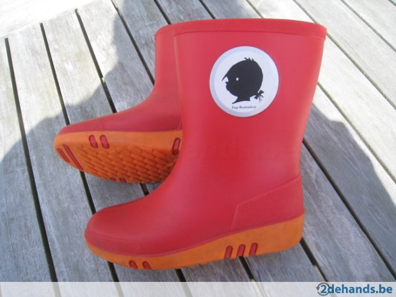
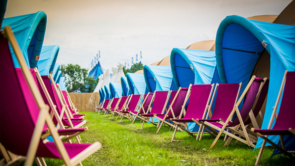

Rood horizontale versie
Dit is de rode pagina.
terug naar de verticale versie
groen
Dit is groene pagina.


blauw
Dit is de blauwe pagina.
oranje
dit is de oranje pagina.
geel
Dit is de gele pagina.